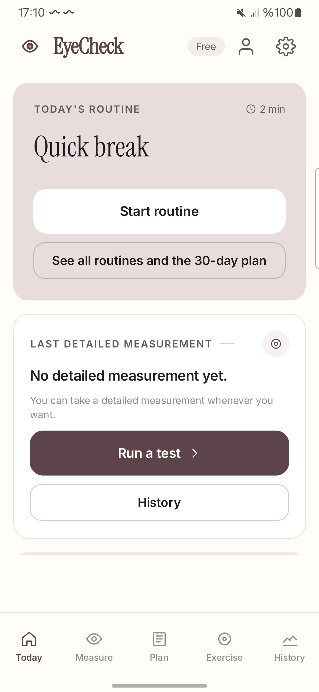

Check your eyes. Rest your eyes.
Ten eye checks on the phone you already own, with viewing distance estimated by the front camera where needed. Results use plain-language categories, and detailed measurements contribute to trends. Your screening results stay on your device. Screening does not replace a professional eye examination.

01 / Inside
Every letter, grid and colour plate has to be drawn at a size that means something at your viewing distance. Solve that, and a phone can run a real screening.
Measurement
Arm-length blur, astigmatism, near acuity and blink rate are free. Colour, contrast, Amsler grid, a 2-metre mirror test and the two near-point tests come with Pro. Run a 90-second quick scan as often as you like, or the six-minute detailed measurement every three months.
Distance
The front camera estimates viewing distance from iris landmarks. Accuracy depends on the camera, lighting and how the test is performed. No ruler, calibration card or printed target is needed. Camera access is required for some tests.
Results
Every result is one of three words: no finding, mild, or marked. The app never shows a diopter value, an axis in degrees or anything resembling a prescription, and every result states the limit of the method that produced it.
Trend
Quick scans keep the habit alive but stay out of the chart. Only detailed measurements feed the trend, the change analysis and PDF reports available with Pro. Results remain indicative and depend on your device and test conditions.
Exercises
Palming, far-near focus, figure eight, slow blinking and scanning drills, plus two interactive ones: line counting and number search. A missed day never resets your streak. These are for easing the tired feeling after a screen day — nothing here claims to improve eyesight.
Anti-memorisation
Letters, their positions, the answer options, the astigmatism dial rotation and every colour plate are generated fresh each time. Repeat the test monthly for a year and there is nothing to learn by heart.
02 / Privacy
Screenings are written to a database inside the app’s own private storage and are never uploaded. Camera frames are analysed in memory and discarded — nothing is written to storage, nothing is sent anywhere. There is no account and no sign-in. Usage analytics and crash reporting have separate switches in Settings; in the EEA and the UK they start off until you turn them on. The free version contains ads. Ads, update checks, subscription checks and enabled analytics or crash reporting use the internet.
Read the privacy policy